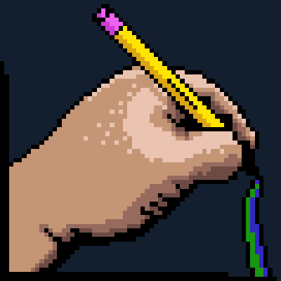
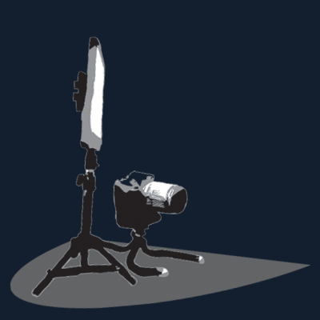
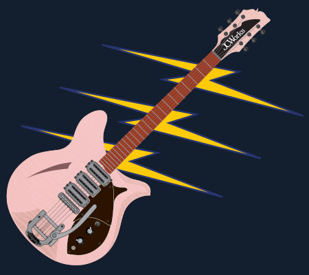
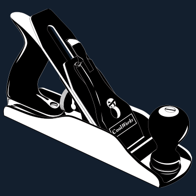

Hi, I'm Josie,
an Analog & Digital Stuff Creator.
I'm a Colorado based artist, designer, musician, and woodworker looking for a career in graphic design or marketing with a company that shares my outlook on life.

I've been a graphic designer, illustrator, and marketing specialist for over 20 years, with experience in print and digital realms. Take a look at a selection of my portfolio here:
View My Graphic Design(Visual) Portfolio

I have had a love of digital video creation and editing for 25 years. I am in the process of filming and creating woodworking and musical videos, in addition to previous fundraising videos from my former employer:
View my Video(Motion) Portfolio

I've been a lifelong musician and songwriter. My skills include singing, playing guitar(electric, acoustic, and pedal steel), bass, drums, keys, and synths. I've been playing in bands around the Denver area since 2003 and have toured nationally on several occasions:
View my Music(Audio) Portfolio

My love for woodworking ranges from design, construction, and finish carpentry, to the creation of furniture and musical instruments. My home workshop exists to both teach others the techniques I've learned and to create one of a kind custom pieces:
View my Woodworking(Tangible) Portfolio